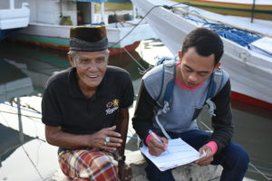
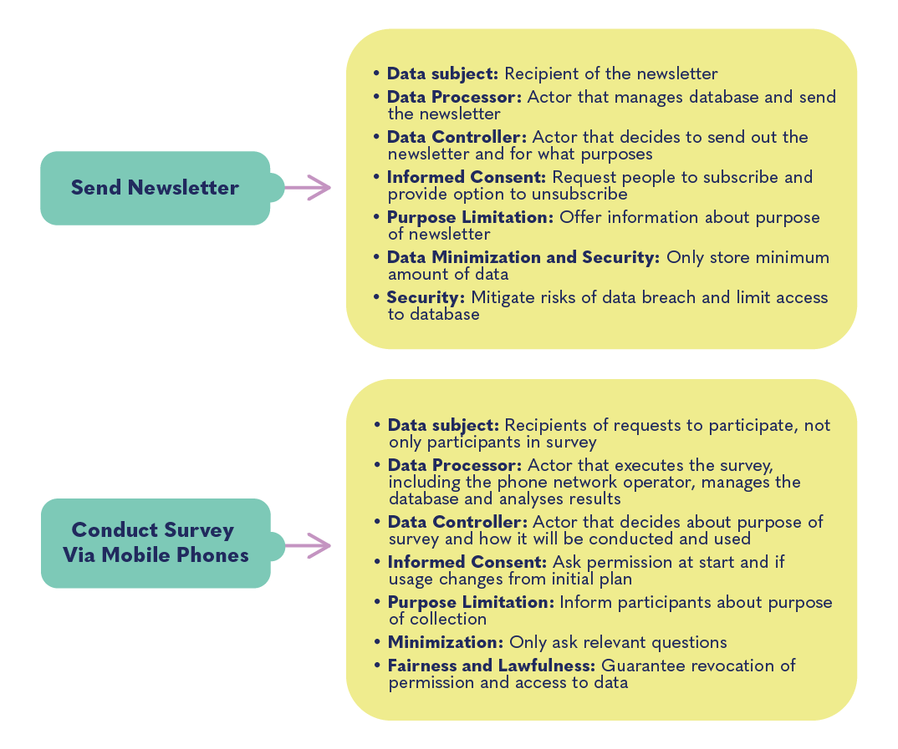
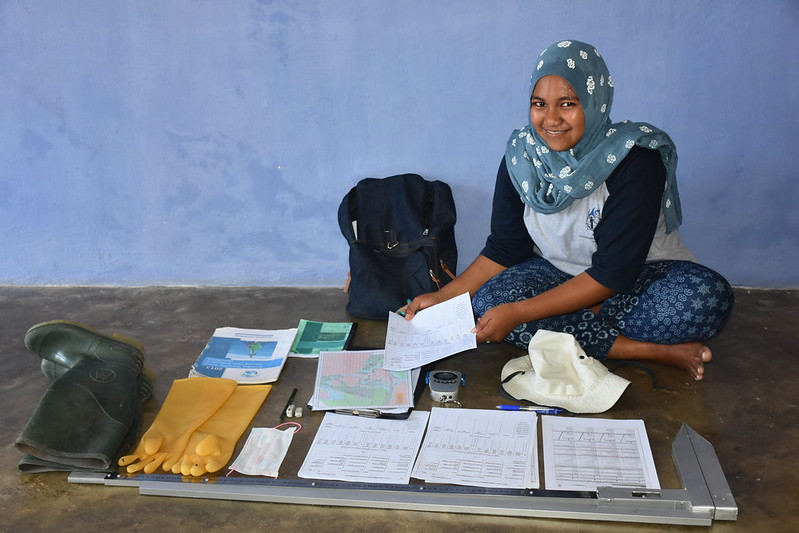

Data Protection
What is data protection?
Data protection refers to practices, measures, and laws that aim to prevent certain information about a person from being collected, used, or shared in a way that is harmful to that person.

Data protection isn’t new. Bad actors have always sought to gain access to individuals’ private records. Before the digital era, data protection meant protecting individuals’ private data from someone physically accessing, viewing, or taking files and documents. Data protection laws have been in existence for more than 40 years.
Now that many aspects of peoples’ lives have moved online, private, personal, and identifiable information is regularly shared with all sorts of private and public entities. Data protection seeks to ensure that this information is collected, stored, and maintained responsibly and that unintended consequences of using data are minimized or mitigated.
What are data?Data refer to digital information, such as text messages, videos, clicks, digital fingerprints, a bitcoin, search history, and even mere cursor movements. Data can be stored on computers, mobile devices, in clouds, and on external drives. It can be shared via email, messaging apps, and file transfer tools. Your posts, likes and retweets, your videos about cats and protests, and everything you share on social media is data.
Metadata are a subset of data. It is information stored within a document or file. It’s an electronic fingerprint that contains information about the document or file. Let’s use an email as an example. If you send an email to your friend, the text of the email is data. The email itself, however, contains all sorts of metadata like who created it, who the recipient is, the IP address of the author, the size of the email, etc.
Large amounts of data get combined and stored together. These large files containing thousands or millions of individual files are known as datasets. Datasets then get combined into very large datasets. These very large datasets, referred to as big data, are used to train machine-learning systems.
Data can seem to be quite abstract, but the pieces of information are very often reflective of the identities or behaviors of actual persons. Not all data require protection, but some data, even metadata, can reveal a lot about a person. This is referred to as Personally Identifiable Information (PII). PII is commonly referred to as personal data. PII is information that can be used to distinguish or trace an individual’s identity such as a name, passport number, or biometric data like fingerprints and facial patterns. PII is also information that is linked or linkable to an individual, such as date of birth and religion.
Personal data can be collected, analyzed and shared for the benefit of the persons involved, but they can also be used for harmful purposes. Personal data are valuable for many public and private actors. For example, they are collected by social media platforms and sold to advertising companies. They are collected by governments to serve law-enforcement purposes like the prosecution of crimes. Politicians value personal data to target voters with certain political information. Personal data can be monetized by people for criminal purposes such as selling false identities.
“Sharing data is a regular practice that is becoming increasingly ubiquitous as society moves online. Sharing data does not only bring users benefits, but is often also necessary to fulfill administrative duties or engage with today’s society. But this is not without risk. Your personal information reveals a lot about you, your thoughts, and your life, which is why it needs to be protected.”
Access Now’s ‘Creating a Data Protection Framework’, November 2018.
The right to protection of personal data is closely interconnected to, but distinct from, the right to privacy. The understanding of what “privacy” means varies from one country to another based on history, culture, or philosophical influences. Data protection is not always considered a right in itself. Read more about the differences between privacy and data protection here.
Data privacy is also a common way of speaking about sensitive data and the importance of protecting it against unintentional sharing and undue or illegal gathering and use of data about an individual or group. USAID’s Digital Strategy for 2020 – 2024 defines data privacy as ‘the right of an individual or group to maintain control over and confidentiality of information about themselves’.
How does data protection work?
Personal data can and should be protected by measures that protect from harm the identity or other information about a person and that respects their right to privacy. Examples of such measures include determining which data are vulnerable based on privacy-risk assessments; keeping sensitive data offline; limiting who has access to certain data; anonymizing sensitive data; and only collecting necessary data.
There are a couple of established principles and practices to protect sensitive data. In many countries, these measures are enforced via laws, which contain the key principles that are important to guarantee data protection.
“Data Protection laws seek to protect people’s data by providing individuals with rights over their data, imposing rules on the way in which companies and governments use data, and establishing regulators to enforce the laws.”
A couple of important terms and principles are outlined below, based on The European Union’s General Data Protection Regulation (GDPR).
- Data Subject: any person whose personal data are being processed, such as added to a contacts database or to a mailing list for promotional emails.
- Processing data means that any operation is performed on personal data, manually or automated.
- Data Controller: the actor that determines the purposes for, and means by which, personal data are processed.
- Data Processor: the actor that processes personal data on behalf of the controller, often a third-party external to the controller, such as a party that offers mailing lists or survey services.
- Informed Consent: individuals understand and agree that their personal data are collected, accessed, used, and/or shared and how they can withdraw their consent.
- Purpose limitation: personal data are only collected for a specific and justified use and the data cannot be used for other purposes by other parties.
- Data minimization: that data collection is minimized and limited to essential details.
Access Now’s guide lists eight data-protection principles that come largely from international standards, in particular,, the Council of Europe Convention for the Protection of Individuals with regard to Automatic Processing of Personal Data (widely known as Convention 108) and the Organization for Economic Development (OECD) Privacy Guidelines and are considered to be “minimum standards” for the protection of fundamental rights by countries that have ratified international data protection frameworks.
A development project that uses data, whether establishing a mailing list or analyzing datasets, should comply with laws on data protection. When there is no national legal framework, international principles, norms, and standards can serve as a baseline to achieve the same level of protection of data and people. Compliance with these principles may seem burdensome, but implementing a few steps related to data protection from the beginning of the project will help to achieve the intended results without putting people at risk.

The figure above shows how common practices of civil society organizations relate to the terms and principles of the data protection framework of laws and norms.
The European Union’s General Data Protection Regulation (GDPR)The data protection law in the EU, the GDPR, went into effect in 2018. It is often considered the world’s strongest data protection law. The law aims to enhance how people can access their information and limits what organizations can do with personal data from EU citizens. Although coming from the EU, the GDPR can also apply to organizations that are based outside the region when EU citizens’ data are concerned. GDPR, therefore, has a global impact.
The obligations stemming from the GDPR and other data protection laws may have broad implications for civil society organizations. For information about the GDPR- compliance process and other resources, see the European Center for Not-for-Profit Law‘s guide on data-protection standards for civil society organizations.
Notwithstanding its protections, the GDPR also has been used to harass CSOs and journalists. For example, a mining company used a provision of the GDPR to try to force Global Witness to disclose sources it used in an anti-mining campaign. Global Witness successfully resisted these attempts.
How to protect your own sensitive information or the data of your organization will depend on your specific situation in terms of activities and legal environment. The first step is to assess your specific needs in terms of security and data protection. For example, which information could, in the wrong hands, have negative consequences for you and your organization?
Digital–security specialists have developed online resources you can use to protect yourself. Examples are the Security Planner, an easy-to-use guide with expert-reviewed advice for staying safer online with recommendations on implementing basic online practices. The Digital Safety Manual offers information and practical tips on enhancing digital security for government officials working with civil society and Human Rights Defenders (HRDs). This manual offers 12 cards tailored to various common activities in the collaboration between governments (and other partners) and civil society organizations. The first card helps to assess the digital security.
Digital Safety Manual
-
Assessing Digital Security Needs
The Digital First Aid Kit is a free resource for rapid responders, digital security trainers, and tech-savvy activists to better protect themselves and the communities they support against the most common types of digital emergencies. Global digital safety responders and mentors can help with specific questions or mentorship, for example, The Digital Defenders Partnership and the Computer Incident Response Centre for Civil Society (CiviCERT).
How is data protection relevant in civic space and for democracy?
Many initiatives that aim to strengthen civic space or improve democracy use digital technology. There is a widespread belief that the increasing volume of data and the tools to process them can be used for good. And indeed, integrating digital technology and the use of data in democracy, human rights, and governance programming can have significant benefits; for example, they can connect communities around the globe, reach underserved populations better, and help mitigate inequality.
“Within social change work, there is usually a stark power asymmetry. From humanitarian work, to campaigning, documenting human rights violations to movement building, advocacy organisations are often led by – and work with – vulnerable or marginalised communities. We often approach social change work through a critical lens, prioritising how to mitigate power asymmetries. We believe we need to do the same thing when it comes to the data we work with – question it, understand its limitations, and learn from it in responsible ways.”
When quality information is available to the right people when they need it, the data are protected against misuse, and the project is designed with the protection of its users in mind, it can accelerate impact.
- USAID’s funding of improved vineyard inspection using drones and GIS data in Moldova, allows farmers to quickly inspect, identify, and isolate vines infected by a phytoplasma disease of the vine.
- Círculo is a digital tool for female journalists in Mexico to help them create strong networks of support, strengthen their safety protocols and meet needs related to the protection of themselves and their data. The tool was developed with the end-users through chat groups and in-person workshops to make sure everything built into the app was something they needed and could trust.
At the same time, data-driven development brings a new responsibility to prevent misuse of data, when designing, implementing or monitoring development projects. When the use of personal data is a means to identify people who are eligible for humanitarian services, privacy and security concerns are very real.
- Refugee camps In Jordan have required community members to allow scans of their irises to purchase food and supplies and take out cash from ATMs. This practice has not integrated meaningful ways to ask for consent or allow people to opt out. Additionally, the use and collection of highly sensitive personal data like biometrics to enable daily purchasing habits is disproportionate, because other less personal digital technologies are available and used in many parts of the world.
Governments, international organizations, and private actors can all – even unintentionally – misuse personal data for other purposes than intended, negatively affecting the well-being of the people related to that data. Some examples have been highlighted by Privacy International:
- The case of Tullow Oil, the largest oil and gas exploration and production company in Africa, shows how a private actor considered extensive and detailed research by a micro-targeting research company into the behaviors of local communities in order to get ‘cognitive and emotional strategies to influence and modify Turkana attitudes and behavior’ to the Tullow Oil’s advantage.
- In Ghana, the Ministry of Health commissioned a large study on health practices and requirements in Ghana. This resulted in an order from the ruling political party to model future vote distribution within each constituency based on how respondents said they would vote, and a negative campaign trying to get opposition supporters not to vote.
There are resources and experts available to help with this process. The Principles for Digital Development website offers recommendations, tips, and resources to protect privacy and security throughout a project lifecycle, such as the analysis and planning stage, for designing and developing projects and when deploying and implementing. Measurement and evaluation are also covered. The Responsible Data website offers the Illustrated Hand-Book of the Modern Development Specialist with attractive, understandable guidance through all steps of a data-driven development project: designing it, managing data, with specific information about collecting, understanding and sharing it, and closing a project.

NGO worker prepares for data collection in Buru Maluku, Indonesia. When collecting new data, it’s important to design the process carefully and think through how it affects the individuals involved. Photo credit: Indah Rufiati/MDPI – Courtesy of USAID Oceans. Opportunities
Data protection measures further democracy, human rights, and governance issues. Read below to learn how to more effectively and safely think about data protection in your work.
Privacy respected and people protectedImplementing data–protection standards in development projects protects people against potential harm from abuse of their data. Abuse happens when an individual, company or government accesses personal data and uses them for purposes other than those for which the data were collected. Intelligence services and law enforcement authorities often have legal and technical means to enforce access to datasets and abuse the data. Individuals hired by governments can access datasets by hacking the security of software or clouds. This has often led to intimidation, silencing, and arrests of human rights defenders and civil society leaders criticizing their government. Privacy International maps examples of governments and private actors abusing individuals’ data.
Strong protective measures against data abuse ensure respect for the fundamental right to privacy of the people whose data are collected and used. Protective measures allow positive development such as improving official statistics, better service delivery, targeted early warning mechanisms, and effective disaster response.
It is important to determine how data are protected throughout the entire life cycle of a project. Individuals should also be ensured of protection after the project ends, either abruptly or as intended, when the project moves into a different phase or when it receives funding from different sources. Oxfam has developed a leaflet to help anyone handling, sharing, or accessing program data to properly consider responsible data issues throughout the data lifecycle, from making a plan to disposing of data.
Risks
The collection and use of data can also create risks in civil society programming. Read below on how to discern the possible dangers associated with collection and use of data in DRG work, as well as how to mitigate for unintended – and intended – consequences.
Unauthorized access to dataUnsafe collection of dataData need to be stored somewhere. On a computer or an external drive, in a cloud, or on a local server. Wherever the data are stored, precautions need to be taken to protect the data from unauthorized access and to avoid revealing the identities of vulnerable persons. The level of protection that is needed depends on the sensitivity of the data, i.e. to what extent it could have negative consequences if the information fell into the wrong hands.
Data can be stored on a nearby and well-protected server that is connected to drives with strong encryption and very limited access, which is a method to stay in control of the data you own. Cloud services offered by well-known tech companies often offer basic protection measures and wide access to the dataset for free versions. More advanced security features are available for paying customers, such as storage of data in certain jurisdictions with data-protection legislation. The guidelines on how to secure private data stored and accessed in the cloud help to understand various aspects of clouds and to decide about a specific situation.
Every system needs to be secured against cyberattacks and manipulation. One common challenge is finding a way to protect identities in the dataset, for example, by removing all information that could identify individuals from the data, i.e. anonymizing it. Proper anonymization is of key importance and harder than often assumed.
One can imagine that a dataset of GPS locations of People Living with Albinism across Uganda requires strong protection. Persecution is based on the belief that certain body parts of people with albinism can transmit magical powers, or that they are presumed to be cursed and bring bad luck. A spatial-profiling project mapping the exact location of individuals belonging to a vulnerable group can improve outreach and delivery of support services to them. However, hacking of the database or other unlawful access to their personal data might put them at risk of people wanting to exploit or harm them.
One could also imagine that the people operating an alternative system to send out warning sirens for air strikes in Syria run the risk of being targeted by authorities. While data collection and sharing by this group aims to prevent death and injury, it diminishes the impact of air strikes by the Syrian authorities. The location data of the individuals running and contributing to the system needs to be protected against access or exposure.
Another risk is that private actors who run or cooperate in data-driven projects could be tempted to sell data if they are offered large sums of money. Such buyers could be advertising companies or politicians that aim to target commercial or political campaigns at specific people.
The Tiko system designed by social enterprise Triggerise rewards young people for positive health-seeking behaviors, such as visiting pharmacies and seeking information online. Among other things, the system gathers and stores sensitive personal and health information about young female subscribers who use the platform to seek guidance on contraceptives and safe abortions, and it tracks their visits to local clinics. If these data are not protected, governments that have criminalized abortion could potentially access and use that data to carry out law-enforcement actions against pregnant women and medical providers.
Unknowns in existing datasetsWhen you are planning to collect new data, it is important to carefully design the collection process and think through how it affects the individuals involved. It should be clear from the start what kind of data will be collected, for what purpose, and that the people involved agree with that purpose. For example, an effort to map people with disabilities in a specific city can improve services. However, the database should not expose these people to risks, such as attacks or stigmatization that can be targeted at specific homes. Also, establishing this database should answer to the needs of the people involved and not driven by the mere wish to use data. For further guidance, see the chapter Getting Data in the Hand-book of the Modern Development Specialist and the OHCHR Guidance to adopt a Human Rights Based Approach to Data, focused on collection and disaggregation.
If data are collected in person by people recruited for this process, proper training is required. They need to be able to create a safe space to obtain informed consent from people whose data are being collected and know how to avoid bias during the data-collection process.
Benefits of cloud storageData-driven initiatives can either gather new data, for example, through a survey of students and teachers in a school or use existing datasets from secondary sources, for example by using a government census or scraping social media sources. Data protection must also be considered when you plan to use existing datasets, such as images of the Earth for spatial mapping. You need to analyze what kind of data you want to use and whether it is necessary to use a specific dataset to reach your objective. For third-party datasets, it is important to gain insight into how the data that you want to use were obtained, whether the principles of data protection were met during the collection phase, who licensed the data and who funded the process. If you are not able to get this information, you must carefully consider whether to use the data or not. See the Hand-book of the Modern Development Specialist on working with existing data.
Backing up dataA trusted cloud-storage strategy offers greater security and ease of implementation compared to securing your own server. While determined adversaries can still hack into individual computers or local servers, it is significantly more challenging for them to breach the robust security defenses of reputable cloud storage providers like Google or Microsoft. These companies deploy extensive security resources and a strong business incentive to ensure maximum protection for their users. By relying on cloud storage, common risks such as physical theft, device damage, or malware can be mitigated since most documents and data are securely stored in the cloud. In case of incidents, it is convenient to resynchronize and resume operations on a new or cleaned computer, with little to no valuable information accessible locally.
Regardless of whether data is stored on physical devices or in the cloud, having a backup is crucial. Physical device storage carries the risk of data loss due to various incidents such as hardware damage, ransomware attacks, or theft. Cloud storage provides an advantage in this regard as it eliminates the reliance on specific devices that can be compromised or lost. Built-in backup solutions like Time Machine for Macs and File History for Windows devices, as well as automatic cloud backups for iPhones and Androids, offer some level of protection. However, even with cloud storage, the risk of human error remains, making it advisable to consider additional cloud backup solutions like Backupify or SpinOne Backup. For organizations using local servers and devices, secure backups become even more critical. It is recommended to encrypt external hard drives using strong passwords, utilize encryption tools like VeraCrypt or BitLocker, and keep backup devices in a separate location from the primary devices. Storing a copy in a highly secure location, such as a safe deposit box, can provide an extra layer of protection in case of disasters that affect both computers and their backups.
Questions
If you are trying to understand the implications of lacking data protection measures in your work environment, or are considering using data as part of your DRG programming, ask yourself these questions:
-
Are data protection laws adopted in the country or countries concerned? Are these laws aligned with international human rights law, including provisions protecting the right to privacy?
-
How will the use of data in your project comply with data protection and privacy standards?
-
What kind of data do you plan to use? Are personal or other sensitive data involved?
-
What could happen to the persons related to that data if the government accesses these data?
-
What could happen if the data are sold to a private actor for other purposes than intended?
-
What precaution and mitigation measures are taken to protect the data and the individuals related to the data?
-
How is the data protected against manipulation and access and misuse by third parties?
-
Do you have sufficient expertise integrated during the entire course of the project to make sure that data are handled well?
-
If you plan to collect data, what is the purpose of the collection of data? Is data collection necessary to reach this purpose?
-
How are collectors of personal data trained? How is informed consent generated when data are collected?
-
If you are creating or using databases, how is the anonymity of the individuals related to the data guaranteed?
-
How is the data that you plan to use obtained and stored? Is the level of protection appropriate to the sensitivity of the data?
-
Who has access to the data? What measures are taken to guarantee that data are accessed for the intended purpose?
-
Which other entities – companies, partners – process, analyze, visualize, and otherwise use the data in your project? What measures are taken by them to protect the data? Have agreements been made with them to avoid monetization or misuse?
-
If you build a platform, how are the registered users of your platform protected?
-
Is the database, the system to store data or the platform auditable to independent research?
Case Studies
People Living with HIV Stigma Index and Implementation BriefRNW Media’s Love Matters Program Data ProtectionThe People Living with HIV Stigma Index is a standardized questionnaire and sampling strategy to gather critical data on intersecting stigmas and discrimination affecting people living with HIV. It monitors HIV-related stigma and discrimination in various countries and provides evidence for advocacy in countries. The data in this project are the experiences of people living with HIV. The implementation brief provides insight into data protection measures. People living with HIV are at the center of the entire process, continuously linking the data that is collected about them to the people themselves, starting from research design, through implementation, to using the findings for advocacy. Data are gathered through a peer-to-peer interview process, with people living with HIV from diverse backgrounds serving as trained interviewers. A standard implementation methodology has been developed, including the establishment if a steering committee with key stakeholders and population groups.
Amnesty International ReportRNW Media’s Love Matters Program offers online platforms to foster discussion and information-sharing on love, sex and relationships to 18-30 year-olds in areas where information on sexual and reproductive health and rights (SRHR) is censored or taboo. RNW Media’s digital teams introduced creative approaches to data processing and analysis, Social Listening methodologies and Natural Language Processing techniques to make the platforms more inclusive, create targeted content, and identify influencers and trending topics. Governments have imposed restrictions such as license fees or registrations for online influencers as a way of monitoring and blocking “undesirable” content, and RNW Media has invested in security of its platforms and literacy of the users to protect them from access to their sensitive personal information. Read more in the publication ‘33 Showcases – Digitalisation and Development – Inspiration from Dutch development cooperation’, Dutch Ministry of Foreign Affairs, 2019, p 12-14.
Norway Parliament DataThousands of democracy and human rights activists and organizations rely on secure communication channels every day to maintain the confidentiality of conversations in challenging political environments. Without such security practices, sensitive messages can be intercepted and used by authorities to target activists and break up protests. One prominent and well-documented example of this occurred in the aftermath of the 2010 elections in Belarus. As detailed in this Amnesty International report, phone recordings and other unencrypted communications were intercepted by the government and used in court against prominent opposition politicians and activists, many of whom spent years in prison. In 2020, another swell of post-election protests in Belarus saw thousands of protestors adopt user-friendly, secure messaging apps that were not as readily available just 10 years prior to protect their sensitive communications.
Girl EffectThe Storting, Norway’s parliament, has experienced another cyberattack that involved the exploitation of recently disclosed vulnerabilities in Microsoft Exchange. These vulnerabilities, known as ProxyLogon, were addressed by emergency security updates released by Microsoft. The initial attacks were attributed to a state-sponsored hacking group from China called HAFNIUM, which utilized the vulnerabilities to compromise servers, establish backdoor web shells, and gain unauthorized access to internal networks of various organizations. The repeated cyberattacks on the Storting and the involvement of various hacking groups underscore the importance of data protection, timely security updates, and proactive measures to mitigate cyber risks. Organizations must remain vigilant, stay informed about the latest vulnerabilities, and take appropriate actions to safeguard their systems and data.
Girl Effect, a creative non-profit working where girls are marginalized and vulnerable, uses media and mobile tech to empower girls. The organization embraces digital tools and interventions and acknowledges that any organisation that uses data also has a responsibility to protect the people it talks to or connects online. Their ‘Digital safeguarding tips and guidance’ provides in-depth guidance on implementing data protection measures while working with vulnerable people. Referring to Girl Effect as inspiration, Oxfam has developed and implemented a Responsible Data Policy and shares many supporting resources online. The publication ‘Privacy and data security under GDPR for quantitative impact evaluation’ provides detailed considerations of the data protection measures Oxfam implements while doing quantitative impact evaluation through digital and paper-based surveys and interviews.
References
Find below the works cited in this resource.
- Access Now, (2018). Creating a Data Protection Framework: A Do’s and Don’t’s Guide for Lawmakers.
- Burgess, Matt, (2020). What is GDPR? The summary guide to GDPR compliance in the UK.
- Council of Europe, (n.d.). Details of Treaty No. 108. Council of Europe Portal.
- De Winter, Daniëlle, Lammers, Ellen & Mark Noort. (2019). 33 Showcases: Digitalisation and Development. Dutch Ministry of Foreign Affairs.
- Digital Defenders Partnership. (n.d.). Digital Safety Manual.
- Digital Defenders Partnership, (n.d.).
- Franz, Vera, (2020). NGOs embrace GDPR, but will it be used against them? Responsible Data.
- Hastie, Rachel & Amy O’Donnell, (2017). Responsible Data Management. Oxfam.
- Nyst, Carly, (2018). Data Protection Standards for Civil Society Organisations. European Center for Not-for-Profit Law (ECNL).
- Office of the United Nations High Commissioner for Human Rights (OHCHR), (2018). A Human Rights-Based Approach to Data: Leaving No One Behind in the 2030 Development Agenda.
- OKThanks, (n.d.).
- Organisation for Economic Co-operation and Development (OECD), (n.d.). OECD Privacy Guidelines.
- Oxfam, (2019). Going Digital. Oxfam Open Repository.
- Oxfam, (2017). Using the data lifecycle to manage data responsibly. Oxfam Open Repository.
- Perarnaud, Clément, (n.d.). Privacy and data protection. Geneva Internet Platform.
- Principles for Digital Development, (n.d.). How to Secure Private Data Stored and Accessed in the Cloud.
- Privacy International, (2020). The Hindsight Files 2020: Much More Than Politics.
- Privacy International, (n.d.). Data Protection.
- Privacy International, (n.d.). Examples of Abuse.
- Responsible Data (RD), (n.d.). What is Responsible Data?
- Responsible Data Program. (2016). The Handbook of the Modern Development Specialist. The Engine Room.
- Sharbain, Raya, (2019). Data protection policy void threatens privacy rights of citizens and refugees in Jordan. Global Voices.
- The Computer Incident Response Centre for Civil Society (CiviCERT), (n.d.). The Digital First Aid Kit.
- The Girl Effect, (2018). Girl Effect publishes good practice safeguarding guidelines for the digital era.
- Udong, Betty Pacutho, et al., (2018). Spatial Mapping and Profiling of Persons with Albinism in Eastern Uganda. Albinism Umbrella.
- United Nations Conference on Trade and Development (UNCTAD), (n.d.). Data Protection and Privacy Legislation Worldwide.
- USAID, (2020). Digital Development Awards – Example Projects.
- USAID, (2020). USAID Digital Strategy.
- USAID, (2019). Considerations for Using Data Responsibly at USAID.
Additional Resources
- Seltzer, William & Margo Anderson, (2001). The Dark Side of Numbers: The Role of Population Data Systems in Human Rights Abuses. Social Research 68(2). Historic research mapping cases of misuse of population data systems.
- United Nations Sustainable Development Group (UNSDG), (2017). Data Privacy, Ethics and Protection: Guidance Note on Big Data for Achievement of the 2030 Agenda
- USAID, (2020). Digital Strategy 2020-2024.
Related Technologies & Trends
Technologies & Trends


Principles for Digital Development
- Design with the User
- Understand the Existing Ecosystem
- Design for Scale
- Be Data Driven
- Use Open Standards, Open data, Open Source, and Open Innovation
- Address Privacy and Security